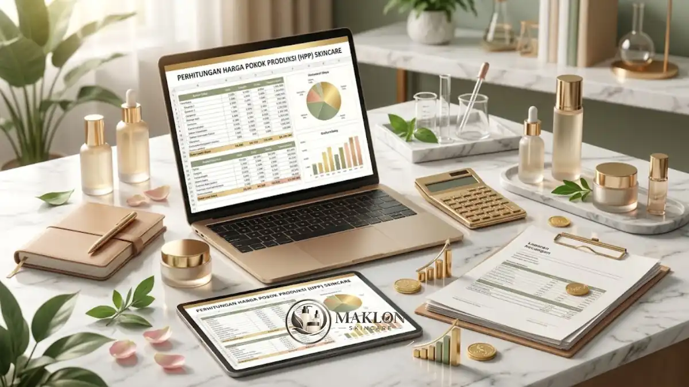

Biaya maklon skincare terdiri dari formulasi, bahan baku, produksi, kemasan, uji mutu, dan legalitas, dengan total yang berbeda tiap pabrik dan tiap produk.
- Tidak ada harga maklon skincare yang berlaku umum, karena tiap produk memiliki formula dan kemasan berbeda.
- Komponen utama meliputi formulasi, bahan baku, produksi, kemasan, uji laboratorium, dan legalitas.
- Jumlah pesanan minimum (MOQ) dan jenis bahan aktif adalah faktor paling berpengaruh pada harga per unit.
- Bahan baku kosmetik didominasi impor sekitar 80 persen, sehingga nilai tukar dapat memengaruhi harga.
- Meminta penawaran rinci dari beberapa pabrik membantu membandingkan biaya secara adil dan transparan.
Apa Saja Komponen Biaya Maklon Skincare?
Komponen biaya maklon skincare meliputi biaya formulasi, bahan baku, ongkos produksi, kemasan, uji laboratorium, pengurusan notifikasi BPOM, sertifikasi halal, serta desain dan cetak label.
Setiap pos anggaran memiliki kontribusi berbeda terhadap total pengeluaran modal usaha Anda. Berikut uraian tiap komponen biaya yang umum ditemui:
- Biaya formulasi dan sampel: Pabrik mengembangkan atau menyesuaikan formula, lalu membuat sampel produk. Pada beberapa pabrik, biaya ini dihitung terpisah, sedangkan pada pabrik lain digabung ke harga produksi.
- Bahan baku: Harga sangat bergantung pada jenis dan konsentrasi bahan aktif. Formula kosmetik dengan konsentrasi bahan aktif premium cenderung berbiaya lebih tinggi.
- Ongkos produksi: Biaya operasional pencampuran (mixing), pengisian (filling), dan pengemasan akhir per batch atau per unit produk.
- Kemasan: Pengadaan wadah seperti botol kaca, pipet, pompa, tube, dus luar (outer box), dan label. Kemasan sering menjadi komponen yang besar dalam harga pokok.
- Uji mutu: Pengujian stabilitas fisik, uji cemaran mikroba, dan pengujian laboratorium lain sesuai jenis formulasi kosmetik.
- Legalitas: Biaya resmi pendaftaran notifikasi kosmetika BPOM dan sertifikasi jaminan produk halal BPJPH.
- Desain dan cetak: Biaya jasa pembuatan grafis kemasan dan ongkos percetakan label botol maupun box kemasan sekunder.
Brand perlu memastikan semua komponen tercantum jelas dalam penawaran tertulis agar tidak ada biaya tersembunyi yang muncul di tengah jalan.
Mengapa Biaya Maklon Skincare Berbeda antar Pabrik?
Biaya maklon skincare berbeda antar pabrik karena perbedaan skala produksi, kualitas bahan baku, kemampuan R&D, jumlah pesanan minimum, dan layanan tambahan yang disertakan dalam penawaran.
Pabrik dengan fasilitas dan tim formulasi yang lebih lengkap umumnya menawarkan layanan lebih komprehensif, tetapi harga bisa lebih tinggi sebanding dengan jaminan mutunya.
Sebaliknya, tawaran harga yang terlalu rendah perlu diperiksa: apakah kualitas bahan baku dikurangi, apakah uji mutu dilewati, atau apakah ada biaya tambahan di kemudian hari.
Data industri membantu memahami lanskapnya. Berdasarkan data BPOM yang dikutip Kemenperin pada Mei 2026, terdapat 1.684 industri kosmetik di Indonesia, dan sekitar 85 persen adalah industri kecil dan menengah.
Dengan banyaknya pilihan, perbedaan skala dan spesialisasi pabrik wajar menghasilkan rentang harga yang lebar di pasaran.
Karena itu, pemilik brand disarankan membandingkan penawaran berdasarkan cakupan layanan secara utuh, bukan hanya tergiur oleh angka nominal akhir.
Faktor Apa yang Paling Memengaruhi Harga Maklon Skincare?
Faktor yang paling memengaruhi harga maklon skincare adalah jenis dan konsentrasi bahan aktif, jumlah pesanan minimum, pilihan kemasan, tingkat kerumitan formula, dan kebutuhan uji tambahan.
Memahami variabel ini akan membantu Anda mengalokasikan anggaran secara efisien tanpa menurunkan performa produk:
- Bahan aktif: Zat aktif populer seperti niacinamide, peptide, atau ekstrak botanical langka dengan harga bahan baku tinggi akan menaikkan harga per unit secara langsung.
- Jumlah pesanan: Produksi dalam jumlah besar (volume tinggi) umumnya menurunkan harga per unit, tetapi menambah kebutuhan modal awal dan risiko penumpukan stok.
- Kemasan: Botol kaca eksklusif, airless pump, atau kemasan dengan cetakan hot print khusus jauh lebih mahal dibanding botol plastik standar.
- Kerumitan formula: Formulasi produk seperti tabir surya atau emulsi water-in-oil yang stabil membutuhkan proses pengembangan dan uji laboratorium yang lebih panjang.
- Model kerja sama: Model OEM dan ODM memiliki struktur biaya awal yang berbeda. Perbandingannya dapat dibaca di artikel perbedaan OEM dan ODM skincare.
- Nilai tukar: Kemenperin menyebut sekitar 80 persen bahan baku kosmetik masih impor pada Mei 2026, sehingga fluktuasi kurs mata uang asing dapat memengaruhi harga pokok bahan.
Bagaimana Cara Menghitung Harga Pokok Produksi Skincare Maklon?
Harga pokok produksi (HPP) skincare maklon dihitung dengan menjumlahkan seluruh biaya produksi dan legalitas, lalu membaginya dengan jumlah unit yang dihasilkan, sehingga diperoleh biaya per unit.

Gunakan langkah sederhana berikut untuk menghitung HPP produk kecantikan Anda:
- Catat harga maklon per unit atau per batch produksi dari pabrik mitra.
- Tambahkan biaya kemasan primer dan sekunder yang dibeli terpisah.
- Tambahkan biaya jasa desain, cetak label, dan pembuatan dus pelindung.
- Tambahkan biaya legalitas, yaitu notifikasi BPOM dan sertifikasi halal.
- Tambahkan biaya pengujian laboratorium dan pembuatan sampel awal.
- Bagi total keseluruhan biaya dengan jumlah unit riil yang akan diproduksi.
- Tambahkan cadangan kerugian untuk produk rusak (reject), sampel promosi influencer, dan ongkos kirim gudang.
Hasil akhir perhitungan ini adalah harga pokok produksi per unit (HPP per botol/tube).
Dari angka ini, brand menentukan harga jual ke konsumen dengan memperhitungkan biaya iklan pemasaran, komisi reseller, potongan platform marketplace, dan margin profit bersih.
Hindari menetapkan harga jual di pasar sebelum seluruh komponen biaya produksi terhitung secara tuntas dan presisi.
Bagaimana Cara Menekan Biaya Maklon Tanpa Mengorbankan Kualitas?
Biaya maklon dapat ditekan dengan memulai dari produk inti, memilih formula siap pakai, menyederhanakan kemasan, dan membandingkan penawaran, tanpa memotong uji mutu dan legalitas.
Berikut strategi efektif menghemat modal kerja bagi pemilik brand pemula:
- Mulai dengan satu sampai tiga produk inti (seperti serum atau facial wash) agar anggaran tidak terpecah.
- Pertimbangkan formula siap pakai (ODM) yang sudah teruji klinis untuk menghemat waktu dan biaya riset formula baru.
- Pilih kemasan standar yang elegan namun ekonomis sebelum brand Anda memiliki basis pasar yang solid.
- Negosiasikan jumlah pesanan minimum (MOQ) dan jadwal produksi yang sejalan dengan arus kas bisnis Anda.
- Bandingkan setidaknya tiga penawaran pabrik dengan cakupan layanan dan spesifikasi bahan yang setara.
Ada hal penting yang sama sekali tidak boleh dihemat: uji stabilitas, kepatuhan terhadap bahan yang diizinkan, pendaftaran notifikasi BPOM, dan sertifikasi halal.
Menghemat anggaran pada aspek krusial ini sangat berisiko menimbulkan penarikan barang dari pasaran, denda regulator, dan kerugian reputasi brand yang jauh lebih besar.
Apa Saja Biaya Tersembunyi dalam Maklon Skincare?
Biaya tersembunyi dalam maklon skincare dapat berupa biaya revisi sampel, penyimpanan barang jadi, ongkos kirim bahan atau kemasan, biaya pengemasan khusus, dan biaya perubahan formula setelah kontrak berjalan.
Sebelum menandatangani kontrak kerja sama produksi, tanyakan secara mendalam hal-hal berikut kepada pihak pabrik:
- Apakah revisi formula sampel dibatasi kuotanya dan berapa biaya tambahan untuk setiap revisi lanjutan?
- Apakah ada biaya sewa penyimpanan (warehouse storage fee) apabila produk jadi belum langsung diambil setelah produksi selesai?
- Siapa pihak yang bertanggung jawab menanggung biaya ganti rugi apabila terjadi produk cacat atau tidak lolos standar QC?
- Apakah kemasan yang dipasok dari pihak ketiga dikenakan biaya penanganan tambahan (handling fee)?
- Apakah ada denda atau penyesuaian harga bila jumlah pesanan akhir berubah dari kesepakatan awal?
Pastikan seluruh jawaban dan kesepakatan dicantumkan dalam surat perjanjian kontrak tertulis. Kejelasan sejak awal akan mencegah timbulnya sengketa biaya di kemudian hari.
Kesimpulan & Langkah Praktis
Biaya maklon skincare terbentuk dari banyak komponen, dan harga terendah belum tentu menjadi pilihan yang paling efisien bagi kelangsungan bisnis Anda.
Hitung harga pokok produksi secara lengkap, bandingkan minimal tiga penawaran pabrik dengan cakupan layanan setara, dan jangan pernah menghemat biaya pada uji mutu serta kepatuhan legalitas.
Artikel ini bersifat informasi umum, dan angka biaya aktual wajib dikonfirmasi langsung dengan pabrik maklon mitra Anda.